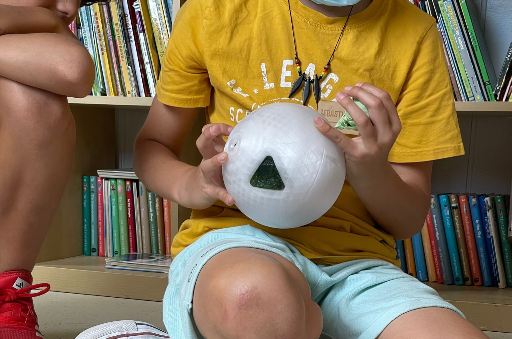

/application_&_implications
(24_may_2022)
This session of FabAcademy developed the topic of applications and implications. During the
FabAcademy we've been developing mini projects and independent tasks in order to practice and
learn about digital fabrication and prototyping technologies. However, we haven't talked that
much about the applications of these technologies in real problems or situations.
Through this session, we could see some real projects developed during FabAcademy in other places
and years, such as the FabLab House made by some FabLab alumni.

.reflecting_on_applications
_What will it do?
SYNE is a project that focuses on the perception of the environment and the use of our senses. The artefacts developed allow people to play, experiment, learn and empathise with their senses and explore reality and get to know it in a different way. Contrary to new technologies that isolate from the real world, SYNE aims at connecting people with their surroundings through different devices designed to interact either with the external world or with other subjects.
_Who’s done what beforehand?
Some projects have been developed around this topic but not specifically with the same intention than mine. On Instructables there are many projects focused on environmental sensing and wearables. There are some about creating musical gloves that don't require a keyboard, sensing bracelets, tools to get weather information, etc. Another environmental sensing project is SmartCitizen by FabLab Barcelona, where a small devices is used to collect data from the city and then process it. However, almost every project I have found around the topic are quite experimental, and this is why it's a bit hard to find them.
_What will you design?
For this project, I will design different tools focused on the use of senses and that can allow the user to perceive the environment in an other way. _What materials and components will be used?
The materials used for the tools are basically materials that are 3D printable in a normal FDM printer, that means PLA, PETG and TPU. These three materials will form the main structure of the devices since they are easy to find, quite cheap and the most important, one can use them to fabricate with any 3D printer. On the other hand, every tool requires electronics such as ESP32 controllers and sensors (touch sensor, sound sensors, accelerometer, colour sensor, etc.).
_Where will it come from?
Every device can be replicated in a FabLab or in a place that has a 3D printer. The electronics don't require other tools since they can be mounted on a breadboard.
_How much will they cost?
The cost of it would be different for each tool, and it would also depend on the price of the materials at each moment. For instance, microcontrollers now are more expensive than before because there's a lack of components. At the same time, 3D printing technologies and materials are everytime cheaper and more accessible to everyone.
_What parts and systems will be made?
In each tool there are generally three different systems: the external shape 3D printed, the electronics and the circuit, and finally the codes in Arduino and P5. Everything needs to work separately for the device to work when assembled.
_What processes will be used?
There are many processes within this project. It's a combination between digital fabrication in relation to design and prototyping technologies, electronics and coding to extract the data from the sensors and then process it, and finally art, specially for the arm wearable and the sensing ball when processing the data in a less pragmatic way.
_What questions need to be answered?
What if we used tools like this in our daily lives?
Would we feel different?
Would our perception of reality change?
Would these tools make us be more connected to the environment?
Would we be more aware of our senses and their roles?
Can this project help some collective?
Which are the uses we can give to the tools created?
_How will it be evaluated?
By analysing if the tools are useful, if they can help someone or make someone feel different while using them. I need to get feedback from the users, see if they feel confident when using the tools and try to find out in which other situations these tools could be used, either for art or for a functional use.